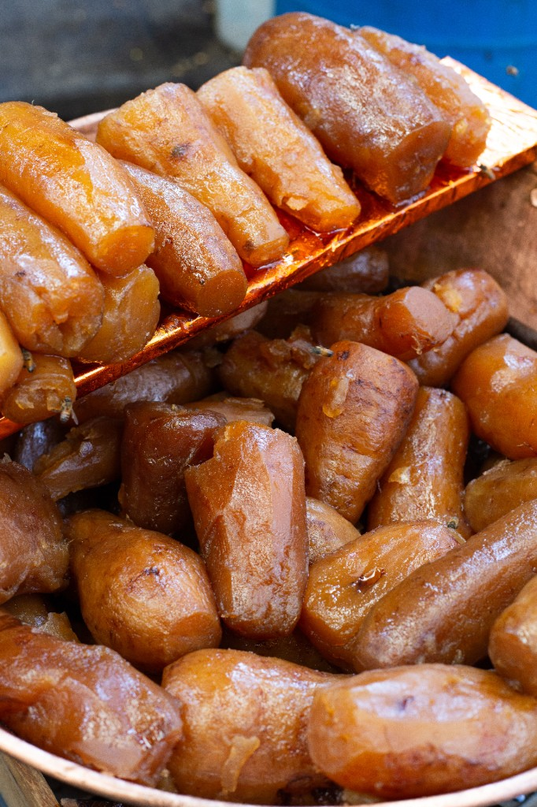

Yams (Dioscorea spp.)
First Cultivated: ~5000 BCE
Optimal Climate: Humid tropical forest-savanna
Water Requirement: 40 to 60 inches annually
African yams are culturally and nutritionally central in West Africa, especially Nigeria, Ghana, and neighboring states. Large tubers store energy for months and feature in festivals as well as daily pounded dishes like fufu. Yam cultivation historically supported dense farming communities in the forest belt.